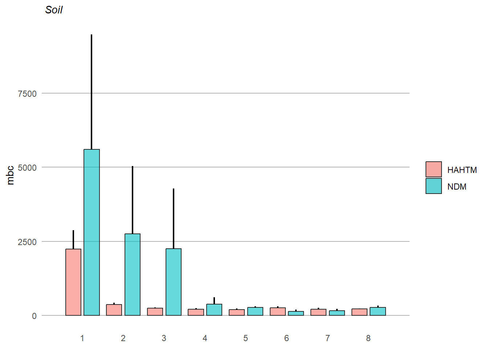

soil_full <- read.csv('soil_full.csv') %>%
as_tibble()Soil
soil_full# A tibble: 71 × 5
material range depth range_mean mbc
<chr> <chr> <dbl> <chr> <dbl>
1 NDM 0-3 1.5 0-10 13323.
2 HAHTM 0-5 2.5 0-10 5251.
3 NDM 0-5 2.5 0-10 2253.
4 HAHTM 0-6 3 0-10 3274.
5 HAHTM 0-6 3 0-10 2881.
6 HAHTM 0-9 4.5 0-10 1527.
7 NDM 3-6 4.5 0-10 7314.
8 HAHTM 0-13 6.5 0-10 896.
9 HAHTM 0-13 6.5 0-10 581.
10 NDM 0-15 7.5 0-10 1252.
# ℹ 61 more rowssoil <- read.csv('soil_full.csv') %>%
as_tibble() %>%
mutate_at(vars(material, range, range_mean), factor) %>%
group_by(material, range_mean) %>%
dplyr::summarize(mean = mean(mbc),
sd = sd(mbc),
n = n(),
se = sd/sqrt(n)
) %>%
mutate(se = sd / sqrt(n),
lower.ci = mean - qt(1 - (0.05 / 2), n - 1) * se,
upper.ci = mean + qt(1 - (0.05 / 2), n - 1) * se)`summarise()` has grouped output by 'material'. You can override using the
`.groups` argument.soil# A tibble: 12 × 8
# Groups: material [2]
material range_mean mean sd n se lower.ci upper.ci
<fct> <fct> <dbl> <dbl> <int> <dbl> <dbl> <dbl>
1 HAHTM 0-10 2244. 1659. 7 627. 710. 3778.
2 HAHTM 10-30 302. 141. 11 42.4 207. 396.
3 HAHTM 30-50 242. 94.8 11 28.6 178. 306.
4 HAHTM 50-70 188. 52.0 7 19.7 140. 237.
5 HAHTM 70-90 242. 55.0 6 22.5 185. 300.
6 HAHTM 90+ 264. 104. 5 46.4 135. 393.
7 NDM 0-10 5193. 4823. 6 1969. 131. 10254.
8 NDM 10-30 434. 271. 4 136. 2.34 865.
9 NDM 30-50 136. 63.5 3 36.6 -21.4 294.
10 NDM 50-70 234. 1.06 2 0.749 224. 243.
11 NDM 70-90 220. 98.8 4 49.4 62.4 377.
12 NDM 90+ 164. 84.5 5 37.8 58.6 268.x_labels = c("0 - 10 cm", "10 - 30 cm", "30 - 50 cm", "50 - 70 cm", "70 - 90 cm", "90+ cm")soil.barplot <- ggplot(soil, aes(x = range_mean, y = mean, fill = material)) +
geom_bar(stat = "identity", position = position_dodge(width = 0.8), width = 0.75, color = "#2b2b2b", linewidth = 0.50, alpha = 0.6) +
geom_linerange(aes(ymin = mean, ymax = mean + se), position = position_dodge(width = 0.8), linewidth = 0.75) +
scale_x_discrete(expand = c(0, 1), labels = x_labels) +
ggtitle(expression(paste(italic(" Soil")))) +
ylab(expression(paste("mbc"))) +
labs(x = NULL) +
theme(strip.text = element_text(size = 10, color = "black", hjust = 0.50),
strip.background = element_rect(fill = "#FFFFFF", color = NA),
panel.background = element_rect(fill = "#FFFFFF", color = NA),
panel.grid.major.x = element_blank(),
panel.grid.minor.x = element_blank(),
panel.grid.minor.y = element_blank(),
panel.grid.major.y = element_line(color = "#b2b2b2"),
panel.spacing.x = unit(1, "cm"),
panel.spacing.y = unit(0.5, "cm"),
panel.spacing = unit(1, "lines"),
axis.ticks = element_blank(),
legend.position = "right",
plot.title = element_text(size = 11),
axis.title.y = element_text(size = 11),
legend.title = element_blank())soil.barplot
soil_full# A tibble: 71 × 5
material range depth range_mean mbc
<chr> <chr> <dbl> <chr> <dbl>
1 NDM 0-3 1.5 0-10 13323.
2 HAHTM 0-5 2.5 0-10 5251.
3 NDM 0-5 2.5 0-10 2253.
4 HAHTM 0-6 3 0-10 3274.
5 HAHTM 0-6 3 0-10 2881.
6 HAHTM 0-9 4.5 0-10 1527.
7 NDM 3-6 4.5 0-10 7314.
8 HAHTM 0-13 6.5 0-10 896.
9 HAHTM 0-13 6.5 0-10 581.
10 NDM 0-15 7.5 0-10 1252.
# ℹ 61 more rowssoil.lm <- lm(mbc ~ depth * material, data = soil_full)par(mfrow = c(2, 2))
plot(soil.lm)
summary(soil.lm)
Call:
lm(formula = mbc ~ depth * material, data = soil_full)
Residuals:
Min 1Q Median 3Q Max
-2461.8 -555.8 -308.3 316.4 9913.9
Coefficients:
Estimate Std. Error t value Pr(>|t|)
(Intercept) 1174.254 454.177 2.585 0.0119 *
depth -14.064 8.463 -1.662 0.1012
materialNDM 2293.428 738.969 3.104 0.0028 **
depth:materialNDM -25.148 12.430 -2.023 0.0470 *
---
Signif. codes: 0 '***' 0.001 '**' 0.01 '*' 0.05 '.' 0.1 ' ' 1
Residual standard error: 1741 on 67 degrees of freedom
Multiple R-squared: 0.2783, Adjusted R-squared: 0.246
F-statistic: 8.612 on 3 and 67 DF, p-value: 6.493e-05ggplot(soil_full, aes(x = depth, y = mbc, color = material)) +
geom_point(size = 1.5)+
xlab("depth") +
ylab("mbc") +
ggtitle("Soil") +
theme(axis.title.x = element_text(face = "bold", size = 14),
axis.title.y = element_text(face = "bold", size = 14),
axis.text.y = element_text(size = 10),
axis.text.x = element_text(size = 10),
legend.text = element_text(size = 10),
legend.title = element_text(size = 10, face = "bold"),
plot.title = element_text(hjust = 0.5, face = "bold", size = 16))